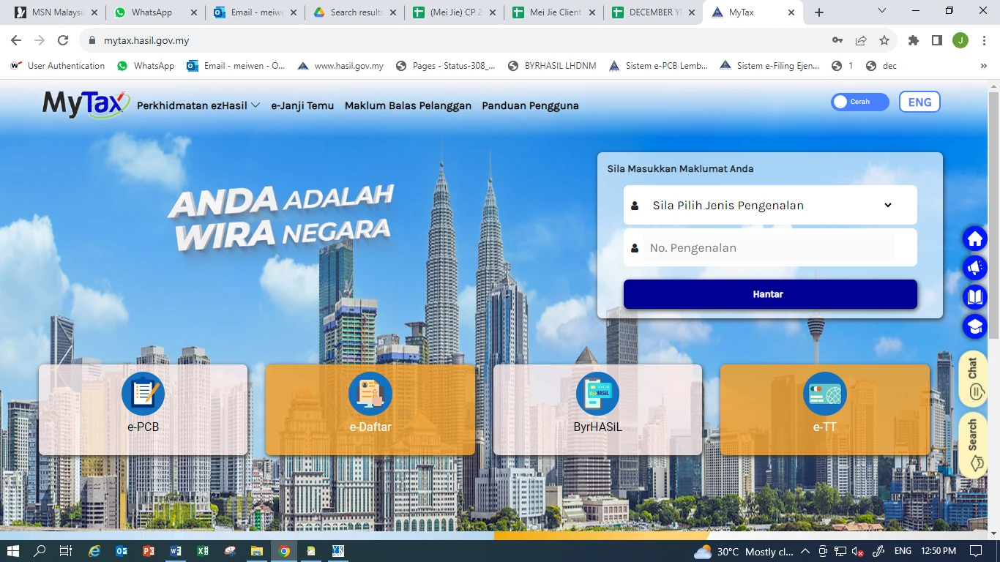
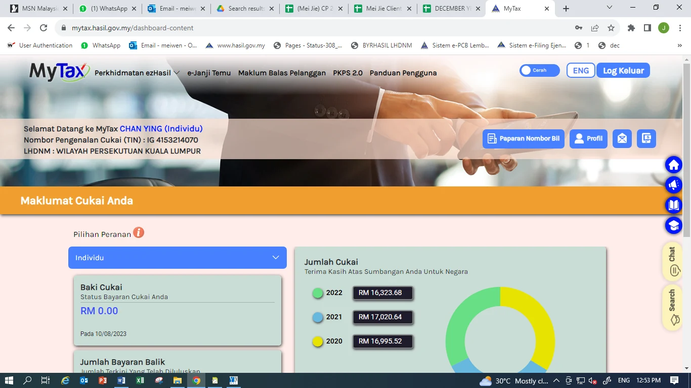
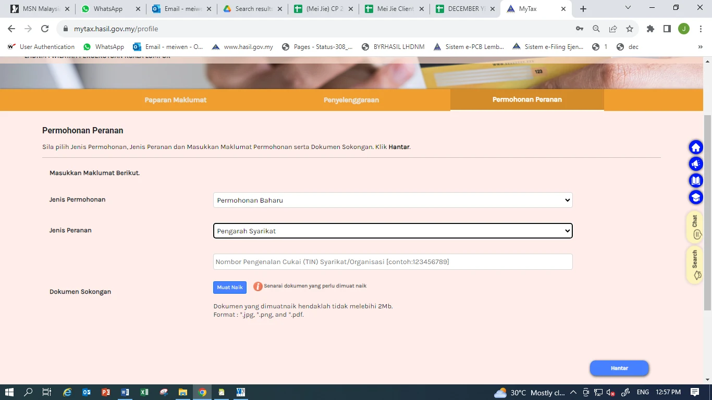
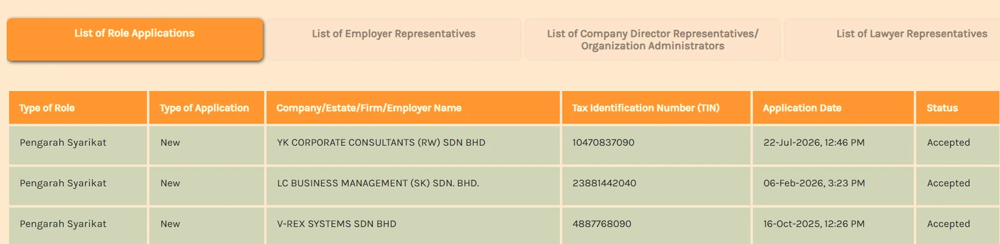
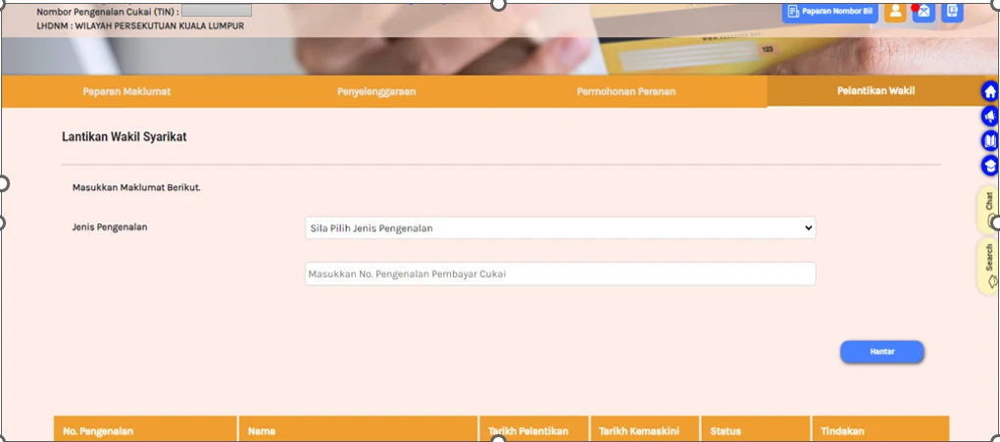
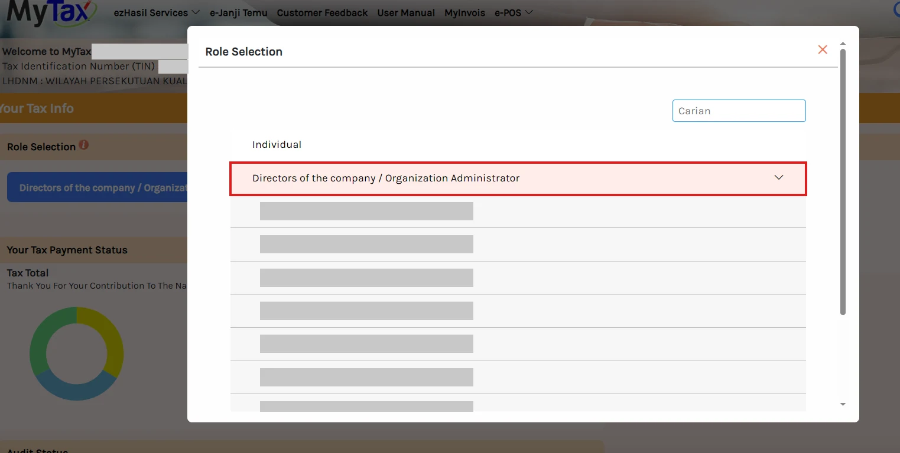
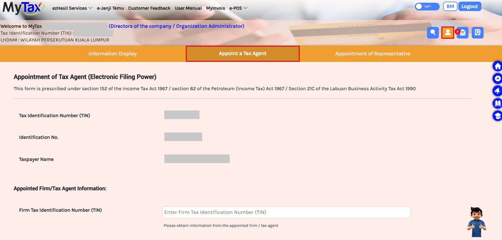
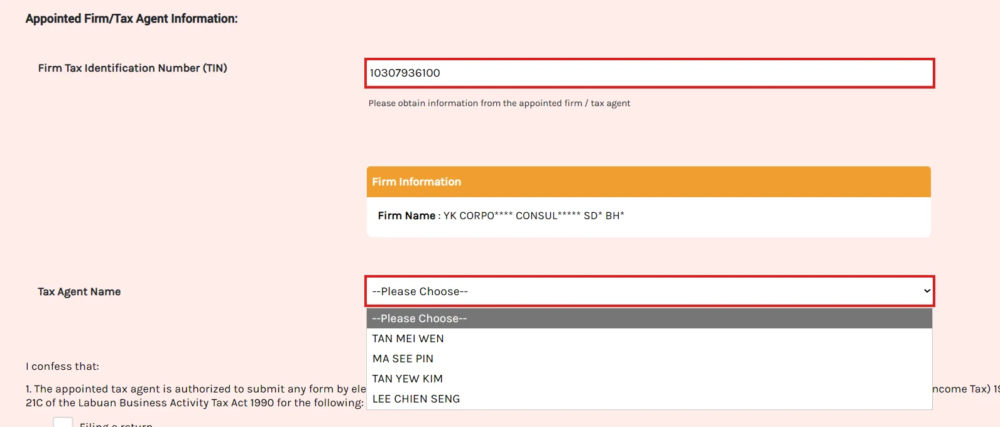
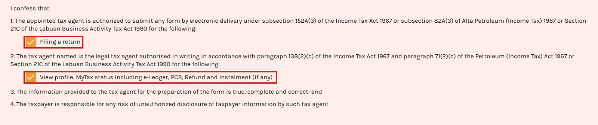
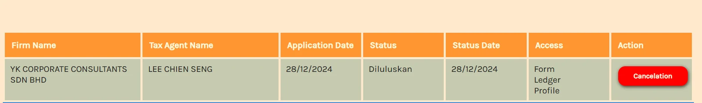

Register role as company director in the MyTax portal
Do this once per company. It links the director's personal MyTax account to the company so the director can act on the company's behalf, including appointing a tax agent in Part 2.
Log in to the director's MyTax account
Go to mytax.hasil.gov.my, choose the ID type, enter the director's identification number, and click Hantar. Then enter the password.

Select Profil
On the dashboard, click the Profil button at the top right.

Open the Permohonan Peranan tab and fill in the form
Example: C 1234567890 →
12345678900Then click Hantar.

Wait for approval
The application status appears at the bottom of the same page in MyTax, under List of Role Applications. Once the status shows Accepted, the director can log in on behalf of the company.

Optional: appoint a Wakil (staff representative)
A Wakil (staff or admin) can also be appointed, so that they can log in to the company's MyTax account too. Under Profil, open the Pelantikan Wakil tab, choose the ID type, enter the staff member's ID number and click Hantar.

How to appoint us as your tax agent in MyTax
Dear Client, please follow the steps below to appoint YK Corporate Consultants Sdn Bhd as your company's tax agent.
What you need before appointment
- The director's MyTax login details (IC number and password).
- The role of Company's Director / Organization Administrator has been approved in the company's MyTax account (see Part 1).
- Our firm's TIN:
10307936100 - The licensed tax agent's name, as informed by our PIC: [NAME]
Log in to the director's MyTax account and select the company
- Log in to MyTax (https://mytax.hasil.gov.my) with your own IC number and password.
- In Role Selection, click Directors of the company / Organization Administrator.
- Choose your company from the list.

Go to the tax agent appointment page
- Click the Profile icon (orange person icon) at the top right.
- Click the Appoint a Tax Agent tab.
- Your company's TIN, registration number and name appear automatically. Please check that they are correct.

Key in our firm's TIN and choose the licensed tax agent
10307936100MyTax hides some letters. This is normal.

Tick both boxes and submit
- Tick Filing a return. This allows us to submit your company's tax return forms electronically.
- Tick View profile, MyTax status including e-Ledger, PCB, Refund and Instalment (if any). This allows us to check your tax account status.
- Read the declaration, then click Submit at the bottom of the page.

Check the appointment status
The appointment status appears at the bottom of the same page. Once approved, the status shows Diluluskan, with access to Form, Ledger and Profile.
